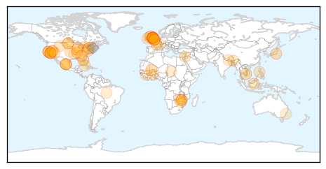
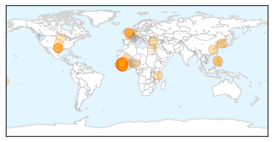

Unknown
30-Day Web Trend
0 alerts, 0 warnings

30-Day Twitter Trend
7 alerts, 0 warnings

Article Locations
Article Confidences
Top Articles:
- 0.976
- More Sick in Quincy Veterans' Home Legionnaries' Outbreak
- 0.969
- Legionnaire's Disease
- 0.967
- E.Coli outbreak on Merseyside with seven cases confirmed
- 0.963
- Doctors Suggest Getting Flu Shot Soon
- 0.946
- Zimbabwe foot and mouth outbreak worries SA and Botswana
- 0.942
- Southeast Alabama, Northwest Florida, Southwest Georgia
- 0.941
- Polio outbreak confirmed in Mali
- 0.922
- African Swine Fever devastates Eastern Europe
- 0.916
- Leprosy higher than reported, National, Phnom Penh Post
- 0.911
- Legionnaires' death toll rises to 10 in western Illinois
- 0.906
- New UC Davis study suggests that popular molecular tests over-diagnose C. difficile infections
- 0.896
- Squirrel near Lake Tahoe tests positive for plague
- 0.888
- What to Know About the Blue-Green Algae in the Ohio River
- 0.866
- A protester holding a placard shouts slogans during a rally to call for visa grants for asylum seekers in Japan, in Tokyo
- 0.859
- Alzheimer’s can be spread from human to human, explosive research claims
- 0.852
- 7 people in Nevada sickened in salmonella outbreak
- 0.850
- Salmonella Case in North Dakota Linked to Cucumbers
- 0.847
- Department of Agriculture Forestry and Fisheries
- 0.831
- First Federal Lawsuit Is Filed After Latest Outbreak
- 0.828
- Can Alzheimer's proteins be spread via medical procedures?
- 0.802
- Patient, heal thyself – POLITICO
- 0.789
- 'Seeds' of Alzheimer's 'might be transferred on medical instruments'
- 0.789
- Alzheimer's disease may be caught through medical accidents
- 0.779
- Glow in the dark chickens to combat bird flu
- 0.771
- Protein linked to Alzheimer's could be spread during surgery, say researchers
- 0.767
- 7 people in Nevada sickened in salmonella outbreak
- 0.760
- Health officials: 4 sickened in Clark Co. tied to cucumber recal
- 0.756
- Technology revolutionizes care in UNRWA health clinics
- 0.738
- 'Seeds' of Alzheimer's 'might be transferred on medical instruments'
- 0.737
- School pupil in South Ayrshire being treated for E Coli NHS confirm
- 0.735
- Woman undergoes test for Leptospirosis – BorneoPost Online
- 0.728
- Washoe County Health District Reports 3 Salmonella Cases; 4 Sick
- 0.719
- Salmonella Linked To Cucumbers Claims Life Of Texas Woman
- 0.716
- Taking the Next Step to Lead on Leave
- 0.709
- Tularemia more widespread this year, say vets
- 0.707
- Safe, Clean Drinking Water Defines Civilization
- 0.705
- Statewide immunization rates for HPV lagging
- 0.694
- Glowing in the dark, GMO chickens shed light on bird flu fight, news, Health News, AsiaOne YourHealth
- 0.690
- The Caledonian-Record
- 0.688
- 4 Southern Nevada salmonella cases linked to imported cucumbers
- 0.681
- Xanana Gusmao receives WHO public health award
- 0.679
- Cucumber salmonella outbreak hits N.D.
- 0.666
- Former health minister Sangay Ngedup honoured
- 0.663
- Alzheimer’s may have been transmitted via injections, researchers say
- 0.659
- Humans, animals face extinction from microbes resistant to antibiotics
- 0.649
- Parents on red alert as medics treat Ayr schoolgirl who has contracted E.Coli bug
- 0.642
- UN global team in Zim
- 0.641
- Children's Hormone Treatments May Have Planted Alzheimer's Seeds
- 0.630
- Children's Hormone Treatments May Have Planted Alzheimer's Seeds
- 0.610
- Alzheimer's may be transferred in some surgeries
Showing top 50 articles...
Top Tweets:
- 0.784
- .@WHO tally suggests 36% of confirmed MERS cases have died. To Sept 8, have been 1517 cases reported, ~539 deaths http://t.co/Vfe7a2Cqsb
- 0.750
- RT: NEWS SCAN: More cucumber Salmonella cases; Cost analysis of high-dose flu vaccine; Flu activity Down Under http://t.co/VgJyMI…
- 0.720
- MERS in Riyadh: @WHO update lists 4 sick health workers who had no known contact with cases. Are cases being missed? http://t.co/5xKFk2Zery
- 0.686
- MERS today: KSA reports 2 cases, 1 death. The death & 1 case are from Riyadh, site of weeks long hospital outbreak. http://t.co/ofHSkjpisK
- 0.611
- RT: ¿Sabías que el kétchup desciende de la salsa china del siglo XVII kôechiap, hecha de pescado en escabeche y especias? h…
- 0.540
- RT: ¿Sabías que el templo budista Wat Pa Maha Chedi Kaew (Tailandia) se construyó con un millón de botellas recicladas? htt…
- 0.529
- Haiti-Droits humains : L’expert indépendant Gustavo Gallón en mission d’évaluation et de suivi: http://t.co/Db3UkfExBA
Ebola
30-Day Web Trend
0 alerts, 0 warnings

30-Day Twitter Trend
0 alerts, 0 warnings

Article Locations
Article Confidences

Top Articles:
- 1.000
- 3 New Ebola Patients Found in Sierra Leone
- 1.000
- Experts Warn Ebola Outbreak Is ‘Not Finished, by a Long Shot’ — Here’s What Has Them Worried
- 1.000
- Ebola zone countries isolated as airlines stop flights
- 1.000
- World Bank pledges millions to Ebola fight as panic grows
- 1.000
- More Ebola in Sierra Leone as Dallas probe notes missteps
- 1.000
- World Health Organisation (WHO) Declares Liberia Ebola-Free Once Again
- 0.999
- How U.S. Hospitals Are Defending Themselves Against The Next Big Outbreak
- 0.999
- One Year Later, U.S. Nurses Feel Unprepared For The 'Next Ebola'
- 0.999
- One Year Later, U.S. Nurses Feel Unprepared For The ‘Next Ebola’
- 0.998
- Ebola vaccine: Officials weigh who to vaccinate, how much to stockpile
- 0.998
- Local nurse helped tackle ebola outbreak
- 0.997
- Guinea passes one week with no new Ebola case
- 0.996
- Guinea passes one week with no new Ebola case: WHO
- 0.995
- Three new Ebola cases in Sierra Leone quarantine village
- 0.994
- Guinea passes one week with no new Ebola case – WHO
- 0.994
- New Ebola test could help curb disease spread
- 0.993
- Tanzania's ‘Ebola heroes’ honoured - News
- 0.992
- Sierra Leone: WHO Ebola Situation Report - 09 September 2015
- 0.990
- Polio Resurfaces In West Africa, Boy Left Paralyzed Due To Vaccine
- 0.983
- DOH confirms Ebola Reston outbreak among monkeys
- 0.980
- No Ebola Virus Transmission to Date in Liberia
- 0.962
- New Sierra Leone Ebola cases frustrate efforts to end outbreak
- 0.960
- Commonwealth Games Federation refuse to punish Samoa after Sierra Leone banned from Apia 2015 over Ebola
- 0.959
- GeoVax’s Ebola Vaccine Proven Effective In Rodent Models
- 0.939
- Belgian national airline increases flights to west Africa
- 0.931
- Belgian national airline increases flights to west Africa - Xinhua
- 0.929
- Sierra Leone suffers setback as new cases of disease emerge
- 0.925
- New Ebola Cases Emerge in Sierra Leone
- 0.914
- Deputy Health Minister Launches National Family Planning Campaign
- 0.910
- Health Minister Poised to Take COMAHS to Higher Height
- 0.907
- BA stops flights to Liberia, Sierra Leone until 2015 over Ebola
- 0.897
- West and Central Africa Region Weekly Humanitarian Snapshot 1 – 7 September 2015 - Nigeria
- 0.887
- Monkeys in PHL facility test positive for ebola but DOH says no crisis
- 0.872
- Health Minister warns of existence of Ebola
- 0.828
- Desperate need for mental health workers in Sierra Leone
- 0.826
- JFK appeals for Doctors
- 0.817
- Diaspora Liberian Lauds President Sirleaf On Measures To Combat Deadly Ebola Virus
- 0.790
- Medico Gets Media Alliance Award
- 0.782
- Médecins Sans Frontières Awarded Prize
- 0.772
- S. Korea to inject US$100 mln to help poor countries combat infectious diseases
- 0.746
- (LEAD) Park: S. Korea to inject US$100 mln to help poor countries combat infectious diseases
- 0.714
- Welcome to the Expotimes News
- 0.688
- If Ebola Hits Again, This State Is Doing Everything Right
- 0.626
- Chatham House Prize 2015: In Conversation with Dr Joanne Liu of Médecins Sans Frontières
- 0.622
- Ebola is still with us; President warns
- 0.617
- For monitoring outbreaks, disaster…Red Cross gives XL motorbikes to supervisors « Awoko Newspaper
- 0.605
- IMF Managing Director to Visit Liberia
- 0.543
- IMF Managing Director to Visit Liberia
- 0.526
- Ruby B. Johnson crowned Miss Eco Sierra Leone
- 0.517
- IMF Managing Director to Visit Liberia
Showing top 50 articles...
Top Tweets:
- 0.940
- Sex and masturbation may hamper Ebola eradication efforts - Yahoo News http://t.co/tf3YX5PXe7 ebola EVD
- 0.938
- Three New Ebola Patients Found in Sierra Leone - Voice of America http://t.co/xZ78pbtex7 ebola EVD
- 0.935
- There is NO evidence to show that women who survive Ebola and subsequently become pregnant pose a risk for Ebola virus transmission
- 0.911
- Sierra Leone officials confirm 3 new cases of Ebola http://t.co/mDqftj9HHe
- 0.876
- RT: Ebola virus disease in pregnancy - Guidance http://t.co/Xb2qvOXnzA…
- 0.876
- Ebola vaccine: Officials weigh who to vaccinate, how much to stockpile - Washington Times http://t.co/42n4mxFo7k ebola EVD
- 0.817
- One Year Later, U.S. Nurses Feel Unprepared For The 'Next Ebola' - Huffington Post http://t.co/3brCls9n0d ebola EVD
- 0.738
- RT: Cautious optimism as Ebola outbreak cases stay low http://t.co/KChbfZe7cx
- 0.665
- Experts Warn Ebola Outbreak Is 'Not Finished, by a Long Shot' — Here's What ... - http://t.co/BAOlHWxUv2 http://t.co/YbGRLoHtfa ebola EVD
- 0.595
- Guinea Ebola SituationReport, 2 September 2015 https://t.co/YSXw5QKSGB via
- 0.576
- Danny Glover arrives Nigeria to play lead Role in Ebola movie, '93 Days' - The Guardian Nigeria (s... http://t.co/DM14sCGfL8 ebola EVD
- 0.540
- Brown Dispels Notion That Liberia Will Live With Ebola - http://t.co/NaiI6Jl8yj http://t.co/f0hAkNwJoP ebola EVD
- 0.507
- Interagency Collaboration on Ebola SituationReport No.6, 8 September 2015 https://t.co/oMSN0EVRrU